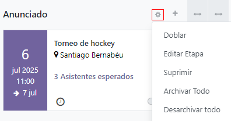
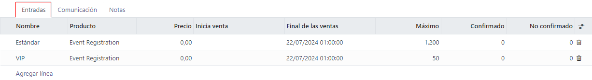
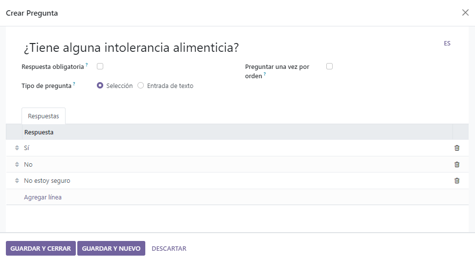
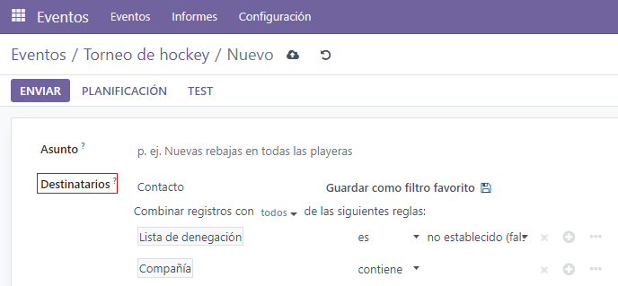
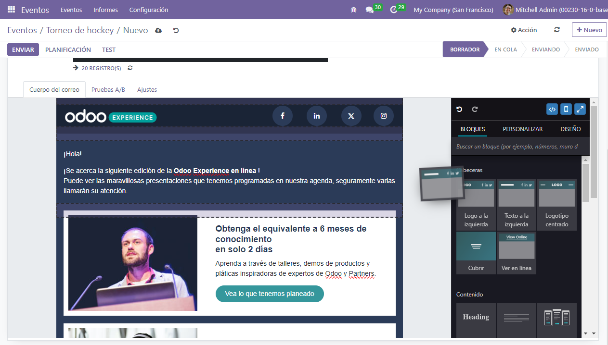

Event essentials¶
Odoo Events provides event coordinators with an arsenal of planning, communications, and reporting tools to create immersive and engaging experiences for customers. Namely, staff can create and publish events on their website, sell tickets online, scan tickets with Odoo barcode, send out automated emails, and generate rich reporting data once the event accepts registrations.
Kanban concepts and organization¶
To get started, click on the Events application on the home dashboard, which then leads to the kanban view populated with a variety of pipeline stages. Key information is listed on each event card, such as the date/time of the event, along with the number of expected (and confirmed) attendees.
To create a new stage, click Add a Column and provide a befitting title to reflect the purpose of that stage.
To reorganize the stages, just drag-and-drop them until they are in the correct order. Stages can also be “folded” in the kanban for a cleaner presentation, via the Settings menu to the right of each stage’s title, which is represented by a gear icon.
Note
The gear icon, by default, is hidden and will appear next to the + icon when moused over.
When clicked, a drop-down menu of settings will appear.
Create a new event¶
To create an event, click Create from the Events dashboard. Odoo will then direct the page to a blank event template form.
From the event form, fill out the necessary fields, either by choosing from existing data in the Odoo database or by creating and editing new field data. Key information to enter for the event includes:
Event Name: give the event a title.
Date: includes the start and end dates/times for the event.
Timezone: covers the timezone for when the event is taking place.
Template: choose from a pre-built event template or build a custom one and connect it here.
Tags: add tags to indicate briefly what the event is for (e.g.
tradeshow). Tags help better organize event cards in the kanban and are useful when using search filters during reporting periods.Organizer: detail the organizer(s) for the event. This field is usually the company that owns the Odoo database, or a vendor.
Responsible: name the point person who is responsible for organizing the event.
Website: indicate which Odoo website(s) the event event should be published to.
Venue: list the venue details here if it’s a new record, or choose from an existing location.
Limit Registrations: when enabled, this setting caps the attendee registrations to a specified amount
Autoconfirmation: when enabled, this setting skips the confirmation request that gets sent by email to event registrants, and automatically confirms their registration.
Once the fields in the event form are set, move on to the Tickets and Communication tabs, and optionally the Questions tab if registrations should require additional information.
Add and sell event tickets¶
Under the Tickets tab, add line items for each type of ticket the event plans to offer. Here, determine the ticket price, start/end dates for registrations, as well as the maximum number of tickets that can be sold.
If selling tickets isn’t necessary for the event, a simple Registration button will be displayed on the event’s page by default.
Attach a questionnaire to event registrations¶
Implementing a questionnaire during event sign up is an effective way to gauge the wants, needs, and interests of the event’s attendees ahead of time. Questionnaires also act as informative analytics tools for reporting periods before (or after) events take place.
To create a questionnaire, from the Events application, navigate to and then enable the Questions setting.
With the setting enabled, questions and answers can now be added (and recorded) under the the Questions tab back on the event form. For each question, specify if it should only be asked once with the Ask once per order checkbox, or if the question requires a Mandatory Answer, which will make the question required for registration.
Example
If the Once per order checkbox is enabled, then a single registration for 3 event attendees will show the questionnaire only once.
There are two Question Types to choose from: Selection and Text Input. The Selection type, allows attendees to select an answer from pre-configured options, which are entered in the Answers tab below. The Text Input type allows attendees to write in their own answer to the question in a text box.
Log internal notes or add ticket instructions¶
In the Notes tab, there is the option to add a Note and/or Ticket instructions.
Under Note, internal notes can be left (such as: to-do lists, contact information, etc.) for event staff to reference. In the Ticket instructions field, helpful information for staff and attendees can be shared (like, directions to the venue, opening/closing times, etc.)
Tip
Type / in either text field (Note or Ticket instructions) to reveal a
sub-menu of Structure options. These options provide various formatting options to
ensure vital internal information is organized for event staff to review.
Invite attendees to the event¶
To invite people to an event, click the Invite button located in the top left corner of the event form.
Inside the invite template form, are options to sent email or SMS invites. Each message can be fully customized, and recipients can be added.
Adding a Subject line for the invite message is required, but the Preview Text field is optional. The Preview Text is a catchy preview sentence meant to encourage recipients to open the email.
Note
In most cases, the Preview Text is displayed next to the subject. Keep this field empty to ensure the first characters of the email content appear, instead.
Select invitees and configure recipient filters¶
In the middle of the invitation form, find and click the Recipients field, to reveal a drop-down menu of recipient options. These choices represent where Odoo will find the desired recipients’ information.
Once an option from this menu is selected (e.g. Applicant, Contact, Event Registration, Lead/Opportunity, etc.), Odoo will send the invitation to all recipients who match that initial rule. Additional rules can be added to narrow down the target recipients, by clicking Add Filter.
Clicking Add Filter reveals three fields, formatted like an equation. To reveal the sub-menu options, click each field, and make the desired selections, until the preferred configuration has been acheived. The number of Records that match the rule(s) are indicated to the right of the Recipients field, in green.
Note
Some sub-menu options in the first rule field allow for a second choice to provide even more specificity.
To the right of each rule, are x, +, and … icons. The x icon deletes a specific node (line) of the rule. The + icon adds a node (line) to the rule. And, the … icon adds a branch to the node. A branch means two additional, indented sub-nodes are added to the rule, providing even more specificity to the line above it.
Build a custom event invite¶
In the Mail Body tab, there are a number of pre-configured message templates to choose from. Select the desired template, and modify every element of its design details with Odoo’s drag-and-drop web builder, located on the right sidebar.
Tip
To build an email event invite from scratch, select the Plain Text template, and
Odoo will provide a blank email canvas, which can be customized either by using the frontend
rich text editor that accepts slash (/) commands, or the XML code editor when developer
mode is engaged and the </> icon is pressed.
Note
The Mail Body tab (and template options), are only available if the event invite Mailing Type is designated as an Email. If SMS is the Mailing Type, a SMS Content tab (consisting of a blank text space), is available, instead.
Modify event invite settings¶
The options under the Settings tab are different, depending on the specified Mailing Type.
If the Email option is selected as the Mailing Type, an employee can be designated as the Responsible, meaning that person is the one responsible for this particular invite message. Send From and Reply To email aliases can be designated here, as well.
Also, if any specific documents are required (or helpful) for this event invite, they can be sent along with this email, by clicking ATTACH A FILE, and adding the appropriate document(s).
If the SMS option is selected as the Mailing Type, a Responsible can be designated, and the option to Include an opt-out link is available.
Send event invitations to recipients¶
If the selected Mailing Type is Email, there are three options to send the invite: Send, Schedule, and Test.
The Send option sends the invite right away. The Schedule option reveals a pop-up, in which a scheduled date/time can be selected for the email to be sent. The Test option reveals a Test Mailing pop-up, where specific recipient email addresses can be entered for Odoo to send them the current version of the mailing for review before officially sending it out to prospective event attendees.
If the selected Mailing Type is SMS, there are four options to send the invite: Put in Queue, Send Now, Schedule, and Test.
The Put in Queue option schedules an SMS message to all recipients (that match the designated rules, if any) in the near future. Clicking Put in Queue reveals a pop-up, requiring confirmation. When confirmed, a blue banner appears on the event invite template form, indicating that the SMS will be sent later that day.
Note
The Send Now, Schedule, and Test options all function the same way for both Mailing Type options.
Publish events¶
Until an event is published, it will remain hidden from public view on the website and registering for it will not be possible. To publish an event, navigate to it either from the backend of Odoo through the Events application, or access the hidden event page through the frontend as either a priveliged user or administrator.
If navigating from the backend, go to the event form, and click the Go to Website smart button to reach the event page on the website (on the frontend). If starting from the frontend , simply navigate to the event page that needs to be published.
No matter the route, an event page can only be published from the frontend. In the upper right corner of the event page on the website, toggle the switch from the red Unpublished status to the green Published status. Doing so instantly makes the event page accessible to the public on the website.